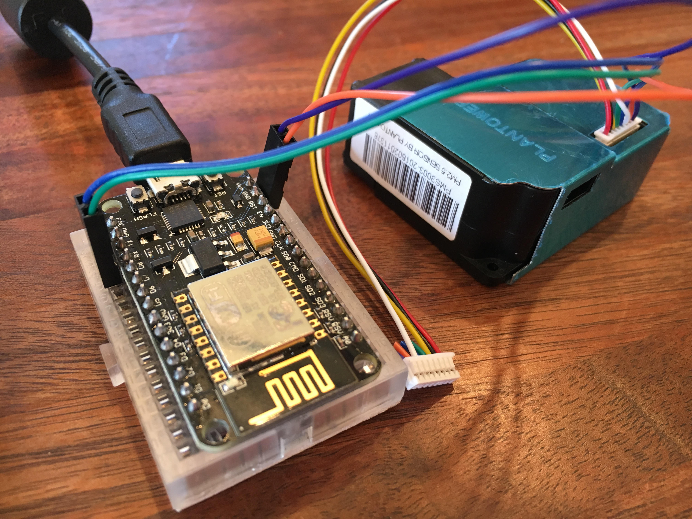
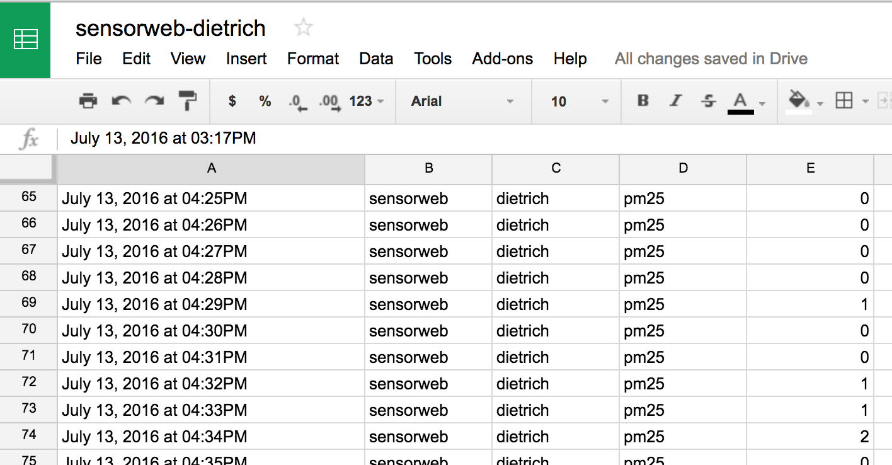

Project SensorWeb is an experiment from the Connected Devices group at Mozilla in open publishing of environmental data. I am excited about this experiment because we've had some serious air quality discoveries in Portland recently - our air is possibly the worst in the USA, and bad enough that mega-activists like Erin Brockovich are getting involved.
A couple of weeks ago, Eddie and Evan from Project SensorWeb helped me put together a NodeMCU board and a PM2.5 sensor so I could set up an air quality sensor in Portland to report to their network. They're still setting up the project so I haven't gotten the configuration info from them yet...
But you don't need the SensorWeb server to get your sensor up and running and pushing data to your own server! I want a copy of the data for myself anyway, to be able to do my own visualizations and notifications. I can then forward the data on to SensorWeb.
So I started by flashing the current version of the SensorWeb code to the device, which is a Nodemcu 0.9 board with an ESP8266 wifi chip on board, and a PM2.5 sensor attached to it.

I used Kumar Rishav's excellent step-by-step post to get through the process.
Some things I learned along the way:
- On Mac OS X you need a serial port driver in order for the Arduino IDE to detect the board.
- After much gnashing of teeth, I discovered that you can't have the PM2.5 sensor plugged into the board when you flash it. After getting the regular version flashed correctly, I tested with Kumar's API key and device id, and confirmed it was reporting the data correctly to the SensorWeb server.
Now for the changes.
- I set up the Maker channel on IFTTT, which allows me post data to an HTTP endpoint to get it into IFTTT's system.
- I then created a new IFTTT recipe that accepts the data from the device and pushes it into a Google spreadsheet.
- I forked the SensorWeb code and modified it to post to the Maker channel instead of the SensorWeb server. I flashed the device and viola, it is publishing data to my spreadsheet.

And now once SensorWeb is ready to take new devices, I can set up a new IFTTT recipe to forward the posts to them, allowing me to own my own data and also publish to the project!